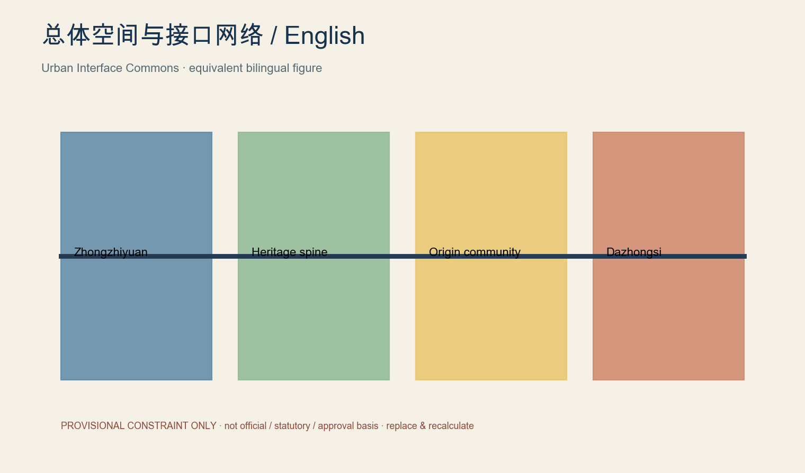
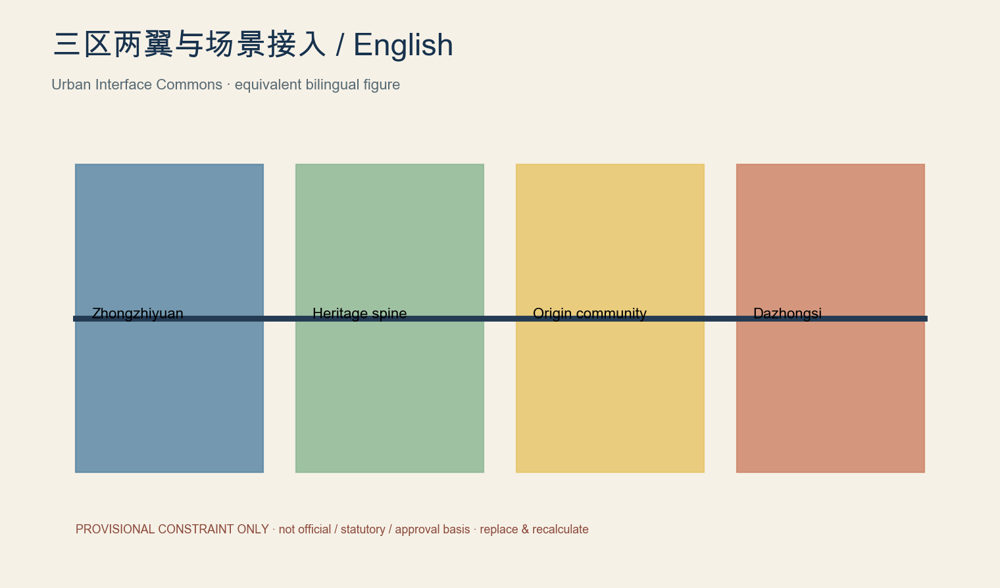
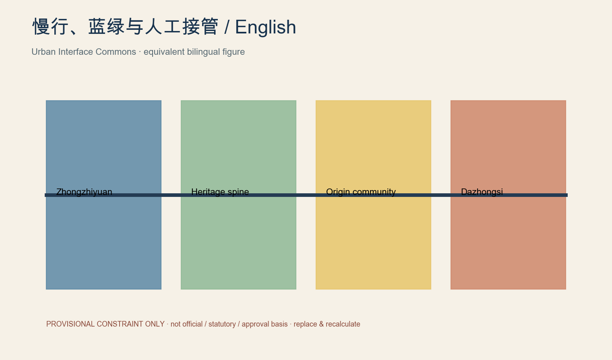
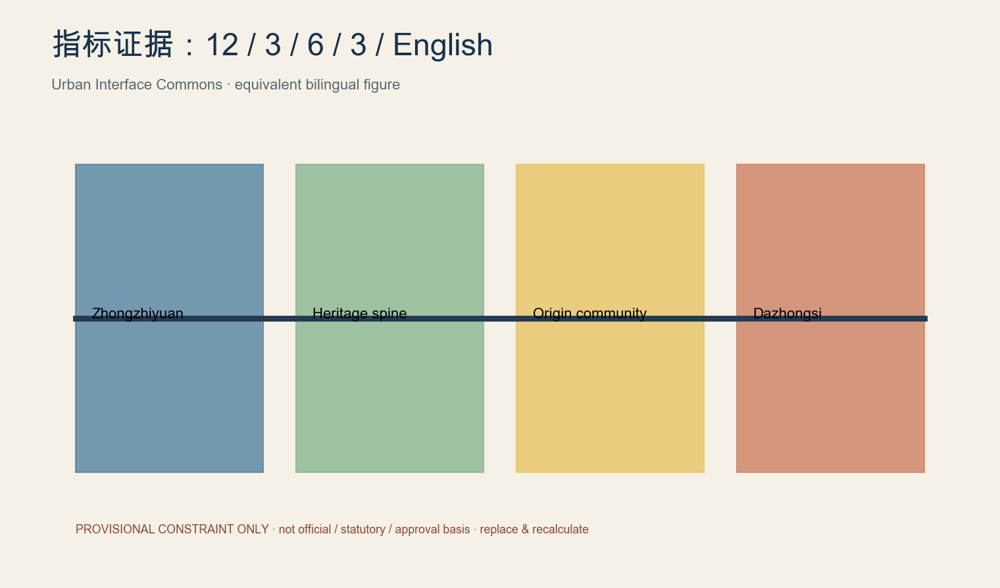

JZ Open Urban Lab / 京张开放城市实验室
Urban Interface Commons: shared, replaceable, auditable, reversible public interfaces for city AI.
JZ Open Urban Lab

Design Basis and Source List
Urban Interface Commons does not add an AI veneer to railway heritage. It pre-builds five public interfaces—talent, compute and tools, data, space, and real-world scenarios—so models, robots, and digital services can connect under common public rules. Each interface identifies users, providers, admission conditions, spatial host, data minimisation, duration, named human owner, pause trigger, exit path, acceptance KPI, and recovery action. Zhongzhiyuan is a pre-deployment proving ground for reliability, weak-network operation, edge AI, interoperability, and human takeover. Beijing AI Origin Community uses resident need definition, co-creation, limited trial, feedback, continue/revise/withdraw choices, and non-AI public-service continuity. Dazhongsi supports AI-native services, professional exchange, capital and scenario publication without claiming a confirmed station-city interface. The Zhongguancun service wing supplies legal, IP, standards, talent, international cooperation, compliance, and safety support; the Xiaoyuehe wing hosts low-speed, low-risk, public-facing and rapidly reversible trials. Replaceable modules—power, network, mounts, docks, accessible counters, e-ink signs, temporary enclosure, safety cut-off, manual takeover, and feedback terminals—sit as a reversible second layer over heritage and public space. Every boundary is provisional, not official, statutory, or an approval basis; official SITE_BOUNDARY and KEY_AREA polygons must replace it and trigger EPSG:4548 recalculation. 来源 空间数据 指标
Three-Level Scope Framework
Urban Interface Commons does not add an AI veneer to railway heritage. It pre-builds five public interfaces—talent, compute and tools, data, space, and real-world scenarios—so models, robots, and digital services can connect under common public rules. Each interface identifies users, providers, admission conditions, spatial host, data minimisation, duration, named human owner, pause trigger, exit path, acceptance KPI, and recovery action. Zhongzhiyuan is a pre-deployment proving ground for reliability, weak-network operation, edge AI, interoperability, and human takeover. Beijing AI Origin Community uses resident need definition, co-creation, limited trial, feedback, continue/revise/withdraw choices, and non-AI public-service continuity. Dazhongsi supports AI-native services, professional exchange, capital and scenario publication without claiming a confirmed station-city interface. The Zhongguancun service wing supplies legal, IP, standards, talent, international cooperation, compliance, and safety support; the Xiaoyuehe wing hosts low-speed, low-risk, public-facing and rapidly reversible trials. Replaceable modules—power, network, mounts, docks, accessible counters, e-ink signs, temporary enclosure, safety cut-off, manual takeover, and feedback terminals—sit as a reversible second layer over heritage and public space. Every boundary is provisional, not official, statutory, or an approval basis; official SITE_BOUNDARY and KEY_AREA polygons must replace it and trigger EPSG:4548 recalculation. 来源 空间数据 指标
Coordinated Research Area: Industry and Future City Research
Urban Interface Commons does not add an AI veneer to railway heritage. It pre-builds five public interfaces—talent, compute and tools, data, space, and real-world scenarios—so models, robots, and digital services can connect under common public rules. Each interface identifies users, providers, admission conditions, spatial host, data minimisation, duration, named human owner, pause trigger, exit path, acceptance KPI, and recovery action. Zhongzhiyuan is a pre-deployment proving ground for reliability, weak-network operation, edge AI, interoperability, and human takeover. Beijing AI Origin Community uses resident need definition, co-creation, limited trial, feedback, continue/revise/withdraw choices, and non-AI public-service continuity. Dazhongsi supports AI-native services, professional exchange, capital and scenario publication without claiming a confirmed station-city interface. The Zhongguancun service wing supplies legal, IP, standards, talent, international cooperation, compliance, and safety support; the Xiaoyuehe wing hosts low-speed, low-risk, public-facing and rapidly reversible trials. Replaceable modules—power, network, mounts, docks, accessible counters, e-ink signs, temporary enclosure, safety cut-off, manual takeover, and feedback terminals—sit as a reversible second layer over heritage and public space. Every boundary is provisional, not official, statutory, or an approval basis; official SITE_BOUNDARY and KEY_AREA polygons must replace it and trigger EPSG:4548 recalculation. 来源 空间数据 指标
Overall Design Area: Urban Renewal and Regulatory-Plan-Level Urban Design
Urban Interface Commons does not add an AI veneer to railway heritage. It pre-builds five public interfaces—talent, compute and tools, data, space, and real-world scenarios—so models, robots, and digital services can connect under common public rules. Each interface identifies users, providers, admission conditions, spatial host, data minimisation, duration, named human owner, pause trigger, exit path, acceptance KPI, and recovery action. Zhongzhiyuan is a pre-deployment proving ground for reliability, weak-network operation, edge AI, interoperability, and human takeover. Beijing AI Origin Community uses resident need definition, co-creation, limited trial, feedback, continue/revise/withdraw choices, and non-AI public-service continuity. Dazhongsi supports AI-native services, professional exchange, capital and scenario publication without claiming a confirmed station-city interface. The Zhongguancun service wing supplies legal, IP, standards, talent, international cooperation, compliance, and safety support; the Xiaoyuehe wing hosts low-speed, low-risk, public-facing and rapidly reversible trials. Replaceable modules—power, network, mounts, docks, accessible counters, e-ink signs, temporary enclosure, safety cut-off, manual takeover, and feedback terminals—sit as a reversible second layer over heritage and public space. Every boundary is provisional, not official, statutory, or an approval basis; official SITE_BOUNDARY and KEY_AREA polygons must replace it and trigger EPSG:4548 recalculation. 来源 空间数据 指标
Detailed Design of Key Areas
Urban Interface Commons does not add an AI veneer to railway heritage. It pre-builds five public interfaces—talent, compute and tools, data, space, and real-world scenarios—so models, robots, and digital services can connect under common public rules. Each interface identifies users, providers, admission conditions, spatial host, data minimisation, duration, named human owner, pause trigger, exit path, acceptance KPI, and recovery action. Zhongzhiyuan is a pre-deployment proving ground for reliability, weak-network operation, edge AI, interoperability, and human takeover. Beijing AI Origin Community uses resident need definition, co-creation, limited trial, feedback, continue/revise/withdraw choices, and non-AI public-service continuity. Dazhongsi supports AI-native services, professional exchange, capital and scenario publication without claiming a confirmed station-city interface. The Zhongguancun service wing supplies legal, IP, standards, talent, international cooperation, compliance, and safety support; the Xiaoyuehe wing hosts low-speed, low-risk, public-facing and rapidly reversible trials. Replaceable modules—power, network, mounts, docks, accessible counters, e-ink signs, temporary enclosure, safety cut-off, manual takeover, and feedback terminals—sit as a reversible second layer over heritage and public space. Every boundary is provisional, not official, statutory, or an approval basis; official SITE_BOUNDARY and KEY_AREA polygons must replace it and trigger EPSG:4548 recalculation. 来源 空间数据 指标
AI Innovation Ecosystem, Personas, and AI+ Scenarios
Urban Interface Commons does not add an AI veneer to railway heritage. It pre-builds five public interfaces—talent, compute and tools, data, space, and real-world scenarios—so models, robots, and digital services can connect under common public rules. Each interface identifies users, providers, admission conditions, spatial host, data minimisation, duration, named human owner, pause trigger, exit path, acceptance KPI, and recovery action. Zhongzhiyuan is a pre-deployment proving ground for reliability, weak-network operation, edge AI, interoperability, and human takeover. Beijing AI Origin Community uses resident need definition, co-creation, limited trial, feedback, continue/revise/withdraw choices, and non-AI public-service continuity. Dazhongsi supports AI-native services, professional exchange, capital and scenario publication without claiming a confirmed station-city interface. The Zhongguancun service wing supplies legal, IP, standards, talent, international cooperation, compliance, and safety support; the Xiaoyuehe wing hosts low-speed, low-risk, public-facing and rapidly reversible trials. Replaceable modules—power, network, mounts, docks, accessible counters, e-ink signs, temporary enclosure, safety cut-off, manual takeover, and feedback terminals—sit as a reversible second layer over heritage and public space. Every boundary is provisional, not official, statutory, or an approval basis; official SITE_BOUNDARY and KEY_AREA polygons must replace it and trigger EPSG:4548 recalculation. 来源 空间数据 指标
Land Use, Building Scale, and Retain-Renovate-Demolish Strategy
Urban Interface Commons does not add an AI veneer to railway heritage. It pre-builds five public interfaces—talent, compute and tools, data, space, and real-world scenarios—so models, robots, and digital services can connect under common public rules. Each interface identifies users, providers, admission conditions, spatial host, data minimisation, duration, named human owner, pause trigger, exit path, acceptance KPI, and recovery action. Zhongzhiyuan is a pre-deployment proving ground for reliability, weak-network operation, edge AI, interoperability, and human takeover. Beijing AI Origin Community uses resident need definition, co-creation, limited trial, feedback, continue/revise/withdraw choices, and non-AI public-service continuity. Dazhongsi supports AI-native services, professional exchange, capital and scenario publication without claiming a confirmed station-city interface. The Zhongguancun service wing supplies legal, IP, standards, talent, international cooperation, compliance, and safety support; the Xiaoyuehe wing hosts low-speed, low-risk, public-facing and rapidly reversible trials. Replaceable modules—power, network, mounts, docks, accessible counters, e-ink signs, temporary enclosure, safety cut-off, manual takeover, and feedback terminals—sit as a reversible second layer over heritage and public space. Every boundary is provisional, not official, statutory, or an approval basis; official SITE_BOUNDARY and KEY_AREA polygons must replace it and trigger EPSG:4548 recalculation. 来源 空间数据 指标
Transport, Rail, Municipal Infrastructure, and Public Services
Urban Interface Commons does not add an AI veneer to railway heritage. It pre-builds five public interfaces—talent, compute and tools, data, space, and real-world scenarios—so models, robots, and digital services can connect under common public rules. Each interface identifies users, providers, admission conditions, spatial host, data minimisation, duration, named human owner, pause trigger, exit path, acceptance KPI, and recovery action. Zhongzhiyuan is a pre-deployment proving ground for reliability, weak-network operation, edge AI, interoperability, and human takeover. Beijing AI Origin Community uses resident need definition, co-creation, limited trial, feedback, continue/revise/withdraw choices, and non-AI public-service continuity. Dazhongsi supports AI-native services, professional exchange, capital and scenario publication without claiming a confirmed station-city interface. The Zhongguancun service wing supplies legal, IP, standards, talent, international cooperation, compliance, and safety support; the Xiaoyuehe wing hosts low-speed, low-risk, public-facing and rapidly reversible trials. Replaceable modules—power, network, mounts, docks, accessible counters, e-ink signs, temporary enclosure, safety cut-off, manual takeover, and feedback terminals—sit as a reversible second layer over heritage and public space. Every boundary is provisional, not official, statutory, or an approval basis; official SITE_BOUNDARY and KEY_AREA polygons must replace it and trigger EPSG:4548 recalculation. 来源 空间数据 指标
Blue-Green Network, Public Space, and Urban Character
Urban Interface Commons does not add an AI veneer to railway heritage. It pre-builds five public interfaces—talent, compute and tools, data, space, and real-world scenarios—so models, robots, and digital services can connect under common public rules. Each interface identifies users, providers, admission conditions, spatial host, data minimisation, duration, named human owner, pause trigger, exit path, acceptance KPI, and recovery action. Zhongzhiyuan is a pre-deployment proving ground for reliability, weak-network operation, edge AI, interoperability, and human takeover. Beijing AI Origin Community uses resident need definition, co-creation, limited trial, feedback, continue/revise/withdraw choices, and non-AI public-service continuity. Dazhongsi supports AI-native services, professional exchange, capital and scenario publication without claiming a confirmed station-city interface. The Zhongguancun service wing supplies legal, IP, standards, talent, international cooperation, compliance, and safety support; the Xiaoyuehe wing hosts low-speed, low-risk, public-facing and rapidly reversible trials. Replaceable modules—power, network, mounts, docks, accessible counters, e-ink signs, temporary enclosure, safety cut-off, manual takeover, and feedback terminals—sit as a reversible second layer over heritage and public space. Every boundary is provisional, not official, statutory, or an approval basis; official SITE_BOUNDARY and KEY_AREA polygons must replace it and trigger EPSG:4548 recalculation. 来源 空间数据 指标
Renewal Projects, Implementation Policy, and Phasing
Urban Interface Commons does not add an AI veneer to railway heritage. It pre-builds five public interfaces—talent, compute and tools, data, space, and real-world scenarios—so models, robots, and digital services can connect under common public rules. Each interface identifies users, providers, admission conditions, spatial host, data minimisation, duration, named human owner, pause trigger, exit path, acceptance KPI, and recovery action. Zhongzhiyuan is a pre-deployment proving ground for reliability, weak-network operation, edge AI, interoperability, and human takeover. Beijing AI Origin Community uses resident need definition, co-creation, limited trial, feedback, continue/revise/withdraw choices, and non-AI public-service continuity. Dazhongsi supports AI-native services, professional exchange, capital and scenario publication without claiming a confirmed station-city interface. The Zhongguancun service wing supplies legal, IP, standards, talent, international cooperation, compliance, and safety support; the Xiaoyuehe wing hosts low-speed, low-risk, public-facing and rapidly reversible trials. Replaceable modules—power, network, mounts, docks, accessible counters, e-ink signs, temporary enclosure, safety cut-off, manual takeover, and feedback terminals—sit as a reversible second layer over heritage and public space. Every boundary is provisional, not official, statutory, or an approval basis; official SITE_BOUNDARY and KEY_AREA polygons must replace it and trigger EPSG:4548 recalculation. 来源 空间数据 指标
Metrics, Area Recalculation, and Compliance Matrix
Urban Interface Commons does not add an AI veneer to railway heritage. It pre-builds five public interfaces—talent, compute and tools, data, space, and real-world scenarios—so models, robots, and digital services can connect under common public rules. Each interface identifies users, providers, admission conditions, spatial host, data minimisation, duration, named human owner, pause trigger, exit path, acceptance KPI, and recovery action. Zhongzhiyuan is a pre-deployment proving ground for reliability, weak-network operation, edge AI, interoperability, and human takeover. Beijing AI Origin Community uses resident need definition, co-creation, limited trial, feedback, continue/revise/withdraw choices, and non-AI public-service continuity. Dazhongsi supports AI-native services, professional exchange, capital and scenario publication without claiming a confirmed station-city interface. The Zhongguancun service wing supplies legal, IP, standards, talent, international cooperation, compliance, and safety support; the Xiaoyuehe wing hosts low-speed, low-risk, public-facing and rapidly reversible trials. Replaceable modules—power, network, mounts, docks, accessible counters, e-ink signs, temporary enclosure, safety cut-off, manual takeover, and feedback terminals—sit as a reversible second layer over heritage and public space. Every boundary is provisional, not official, statutory, or an approval basis; official SITE_BOUNDARY and KEY_AREA polygons must replace it and trigger EPSG:4548 recalculation. 来源 空间数据 指标
Risk, Copyright, and Compliance
Urban Interface Commons does not add an AI veneer to railway heritage. It pre-builds five public interfaces—talent, compute and tools, data, space, and real-world scenarios—so models, robots, and digital services can connect under common public rules. Each interface identifies users, providers, admission conditions, spatial host, data minimisation, duration, named human owner, pause trigger, exit path, acceptance KPI, and recovery action. Zhongzhiyuan is a pre-deployment proving ground for reliability, weak-network operation, edge AI, interoperability, and human takeover. Beijing AI Origin Community uses resident need definition, co-creation, limited trial, feedback, continue/revise/withdraw choices, and non-AI public-service continuity. Dazhongsi supports AI-native services, professional exchange, capital and scenario publication without claiming a confirmed station-city interface. The Zhongguancun service wing supplies legal, IP, standards, talent, international cooperation, compliance, and safety support; the Xiaoyuehe wing hosts low-speed, low-risk, public-facing and rapidly reversible trials. Replaceable modules—power, network, mounts, docks, accessible counters, e-ink signs, temporary enclosure, safety cut-off, manual takeover, and feedback terminals—sit as a reversible second layer over heritage and public space. Every boundary is provisional, not official, statutory, or an approval basis; official SITE_BOUNDARY and KEY_AREA polygons must replace it and trigger EPSG:4548 recalculation. 来源 空间数据 指标
References
Urban Interface Commons does not add an AI veneer to railway heritage. It pre-builds five public interfaces—talent, compute and tools, data, space, and real-world scenarios—so models, robots, and digital services can connect under common public rules. Each interface identifies users, providers, admission conditions, spatial host, data minimisation, duration, named human owner, pause trigger, exit path, acceptance KPI, and recovery action. Zhongzhiyuan is a pre-deployment proving ground for reliability, weak-network operation, edge AI, interoperability, and human takeover. Beijing AI Origin Community uses resident need definition, co-creation, limited trial, feedback, continue/revise/withdraw choices, and non-AI public-service continuity. Dazhongsi supports AI-native services, professional exchange, capital and scenario publication without claiming a confirmed station-city interface. The Zhongguancun service wing supplies legal, IP, standards, talent, international cooperation, compliance, and safety support; the Xiaoyuehe wing hosts low-speed, low-risk, public-facing and rapidly reversible trials. Replaceable modules—power, network, mounts, docks, accessible counters, e-ink signs, temporary enclosure, safety cut-off, manual takeover, and feedback terminals—sit as a reversible second layer over heritage and public space. Every boundary is provisional, not official, statutory, or an approval basis; official SITE_BOUNDARY and KEY_AREA polygons must replace it and trigger EPSG:4548 recalculation. 来源 空间数据 指标
Interface operating matrix
The five interfaces align people, tools, data, spatial modules, and scenario contracts. The package includes twelve scenario cards, three validation grounds, six personas, and three non-commercial public landmarks: the 0-kilometre railway–intelligence gate, the Open Model Yard with public selection and version records, and the City Agent Commons for public discussion, developer activity, failure review, and resident feedback.


